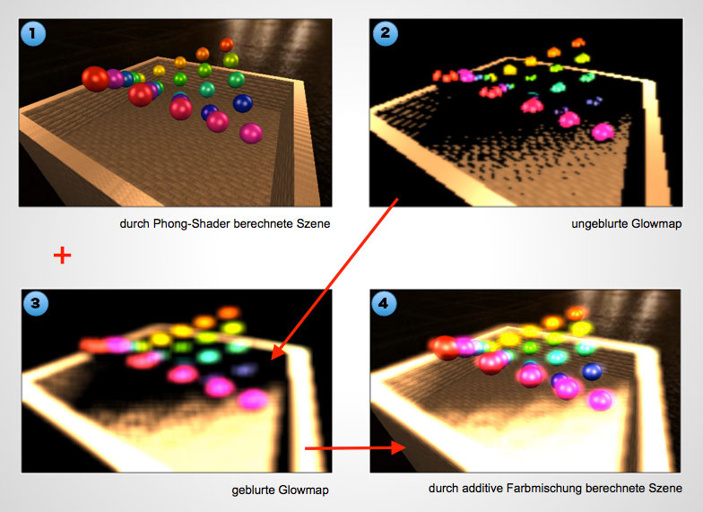
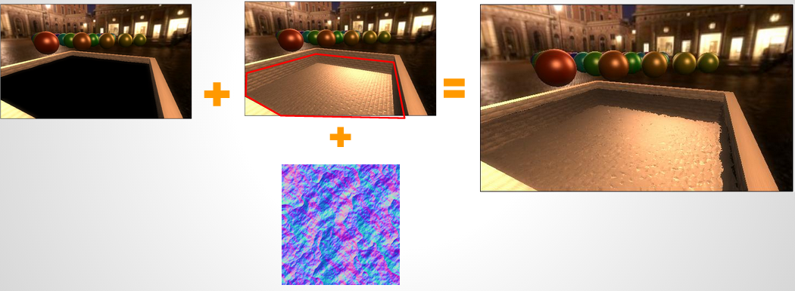
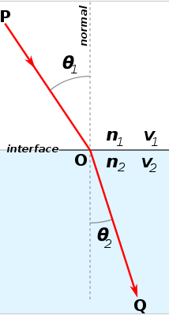
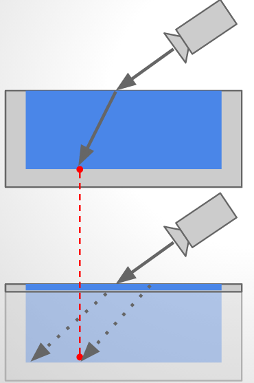

Gegenstand dieser Aufgabe ist die selbstständige Recherche, prototypische Implementierung, schriftliche Ausarbeitung und abschließende Präsentation einer nicht-trivialen Multi-Pass Technik.
Themenwahl
Wir haben uns für die umsetzung verschiedener, kombinierte Multi-pass Techniken im Rahmen einer kleinen Beispielanwendung entschieden. Konkret sind dies Bloom, winkelabhhängige Spiegelung und Refraktion
Theoretische Grundladen
Das Blooming erzeugt einen Leucht- bzw. Überstrahl-Effekt in Abhängigkeit der Helligkeit eines jeden Pixels. Im allgemeinen werden hierbei helle Bereiche einer Szene stark überzeichnet dargestellt - dunkle hingegen bleiben unverändert. Der Ablauf des Bloomings lässt sich in follgende Schritte unterteilen:

brightpass) beachtet werden. Dies wird auch als sogenannte Brigth-Pass Filterung bezeichnet:
vec3 brightpass_filter(vec3 color){
float b = (color.r + color.g + color.b)/3.0;
if(b < brightpass){
return vec3(0.0,0.0,0.0);
}
return color;
}
void main() {
...
gl_FragColor.rgb = brightpass_filter(outcolor);
}
const int samples = 5;
const float center = (float(samples)-1.0)/2.0;
vec3 color = vec3(0.0);
for (int x = 0; x < samples; x++) {
for (int y = 0; y < samples; y++) {
float xx = (float(x) - center) * glowBlurSize;
float yy = (float(y) - center) * glowBlurSize;
vec2 tc = texCoordI + vec2(xx, yy);
float kernelWeight = 1.0 / (abs(xx)+abs(yy)+1.0);
color += texture2D(colorBuffer, tc).rgb *
kernelWeight;
}
}
glowBlurSize) wirkt sich dabei wie folgt aus.
Die zuvor gefüllten Frambuffer werden dann per additive Farbmischung in Abhängigkeit eines Multiplikators (glowStrength) der angibt wie stark sich die Glowmap auf das Endresultat auswirkt verrechnet.
void main() {
vec3 glowmapPixel = texture2D(glowMap, texCoordI).rgb;
vec3 origPixel = texture2D(colorBuffer, texCoordI).rgb;
gl_FragColor.rgb += origPixel;
gl_FragColor.rgb += glowmapPixel * glowStrength;
gl_FragColor.a = 1.0;
}
Die Reflektion einer Oberfläche kann simuliert werden, indem die Szene um die Normale der Oberfläche gespiegelt wird. Das Ergebnis wird in eine Texture gerendert, auf die reflektierende Oberfläche gemappt wird.
Wir haben diesen Sachverhalt vereinfacht implementiert und gehen davon aus, dass die spiegelnde Oberfläche sich auf der X-Z-Ebene befindet. Somit kann die Szene gepiegelt werden, indem die Y-Achse umgedreht wird. Wir haben dies im Vertex Shader umgesetzt.
if(waterview == 1){
positionW.y *= -1.0;
}
waterview ist eine Uniform Variable, welche beim Rendervorgang des Reflektion Framebuffers auf 1 gesetzt wird.
In diesem Schritt muss sichegestellt werden, dass Objekte, welche sich unter der Wasserobefläche befinden nicht gerendert werden. Die einfachste Art dies zu erreichen, ist im Fragment-Shader alle Fragmente zu verrwerfen, welche unter Wasser sind (y < 0)
if(positionW.y > 0.0){
discard;
}
Die umgekehrt gerenderte Szene muss nun auf die reflektierende Oberfläche gemappt werden. Dafür können die Einheitskoordinaten verwendet werden.
Vertex Shader:
/* Einheitskoordinaten durch tiefe (z) Teilen um die perspektivische
Verzerrung auszugleichen */
vec2 reflectionTexI = gl_Position.xy / gl_Position.z
/* normalisieren auf Texturkoordinaten */
reflectionTexI = reflectionTexI + vec2(1.0) / 2.0;
gl_FragColor.rgb = texture2D(reflectionMap, reflectionTexI)
Um eine wasserartige Oberfläche zu erhalten, kann eine Normalmap verwendet werden, welche die Texturkoordinaten der eben verwendeten reflectionMap ein wenig verschiebt.
const float normalStrengh = 0.01;
vec3 normal = texture2D(waterNormalMap, texCoordI).rgb;
gl_FragColor.rgb = texture2D(reflectionMap + normal.xz * normalStrengh, reflectionTexI)
Der einfache Ansatz um Refraktion zu simulieren, ist die Szene unterhalb der Wasseroberfläche zu rendern und danach eine Normalmap auf diese Textur anzuwenden. Somit sieht alles Unterhalb der Wasseroberfläche verzerrt aus und gibt dem Zuschauer den Eindruck von Refraktion.
Praktisch ist das allerdings nicht korrekt, da die Änderung der Dichte den Lichtstrahl beim austritt aus dem Wasser krümmen würde. Um dies zu simulieren wurde ein anderer Ansatz hinzugefügt. Snell's Gesetz beschreibt dieses Verhalten. Hierbei wird der Lichtstrahl folgender Formel gekrümmt gekrümmt:
sin(α) n1 ------ = ---- sin(β) n2
Wobei α und β jeweils dem Ein- und Austrittswinkel bestimmen und n1 und n2 die Dichte der jeweiligen Materialien ist.
Da diese Berechnung in einem Renderdurchlauf nur sehr schwer physikalisch korrekt Umsetzbar ist, haben wir uns entschieden eine grobe Approximation diese Sachverhalts umzusetzen.
In der folgenden Zeichnung ist oben das physikalisch korrekte Verhalten und unten unserer Trick zum nachempfinden diese Verhaltens illustriert.
Die Framebuffer Textur beinhaltet nämlich bereits die BildInformationen, die gebraucht werden um eine näherungsweise korrekte Refraktion zu zeigen an anderer Stelle! Wir müssen nur die Texturekoordination des Refraktions-Framebuffers so modifizieren, dass dieser in Abhängigkeit des Eintrittswinkels und der Wassertiefe modifiziert wird.
Die Tiefeninformation wird beim Rendering der Unterwasser-Szene in den Alpha-Kanal geschrieben. Wir können diesen wert dann später mit der Entfernung des Wasseroberflächen Fragments vergleichen um die Wassertiefe zu berechnen:
varying float depthWEC;
...
gl_Position = projection * view * positionW;
depthWEC = gl_Position.z;
uniform int refractionView;
...
if(refractionView == 1){
gl_FragColor.a = depthWEC;
}
Wie schon zuvor ist eine weitere Uniformvariable refractionView als Schalter für diesen Rendermodus eingeführt worden.
Nun kann dieser Tiefenwert genutzt werden, um beim rendern des Wassers mit dem dortigen Z-Wert verglichen zu werden. Praktisch berechnet dies die Eintrittstiefe des Sichtvektors in das Wasser.
// der eben berechnete Tiefenwert im Alphakanal:
float underWaterDepth = texture2D(sceneTexture, reflectionI).a;
// Differenz der Tiefenwerte
float waterDepthDelta = (underWaterDepth - depthWEC);
// berechnung der Schräge mit der aufs Wasser geblickt wird:
// der vec3(0,1,0) ist die Normale des Wassers (geht von XZ-Plane aus)
float eyeDirWaterAngle = 1.0 - dot(eyeDirectionW, vec3(0.0,1.0,0.0));
// berechnet den Offset auf der Unterwasser-Szenen-Textur
// refractionStrength ist eine uniform variable um die Stärke des Effekts zu bestimmen
vec2 waterRefractOffset = vec2(0.0,-eyeDirWaterAngle * waterDepthDelta * refractionStrength);
// Setzen der Farbwerte anhand des eben berechneten offsets und des originalwertes 'reflectTexCoord'
gl_FragColor.rgb += texture2D(sceneTexture, reflectTexCoord + waterRefractOffset).rgb;
Wie man sehen kann, bringt dieser Ansatz eine einigermaßen Realistische Refraktion zu stande. Allerdings ist diese physikalisch gesehen völliger Humbug. Das wird insbesondere dann klar, wenn weitere Objekte unter Wasser treiben, da dann der Boden unter umständen diese Objekte in die Refraktion aufnimmt.
Ergebnis